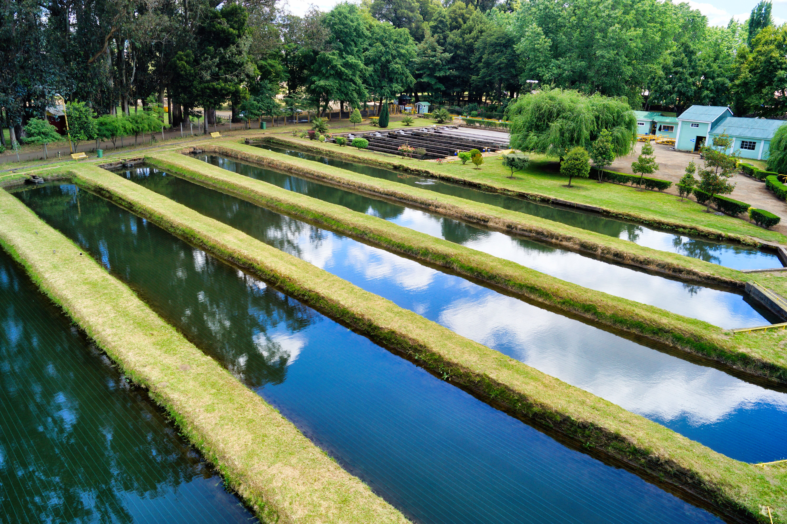

Localización Hídrica
Geolocalización en tiempo real de fuentes de agua potable con filtros avanzados.
ODS 6 · Agua limpia y saneamiento
Presentamos iniciativas digitales e innovadoras orientadas a promover el uso responsable, la conservación del agua y la gestión sostenible en hogares y comunidades.

Sobre nosotros
Somos una iniciativa comprometida con la gestión sostenible de los recursos hídricos, promoviendo el uso responsable y la conservación del agua.
Nuestras soluciones
Geolocalización en tiempo real de fuentes de agua potable con filtros avanzados.
Plataforma colaborativa para notificar caños defectuosos y desbordes.
Autonomía técnica para recopilar datos sin necesidad de conexión a internet.
HU · Consulta interactiva
HU · Reporte e interacción
Envíanos tus datos o la ubicación de un caño defectuoso para notificar al equipo gestor.